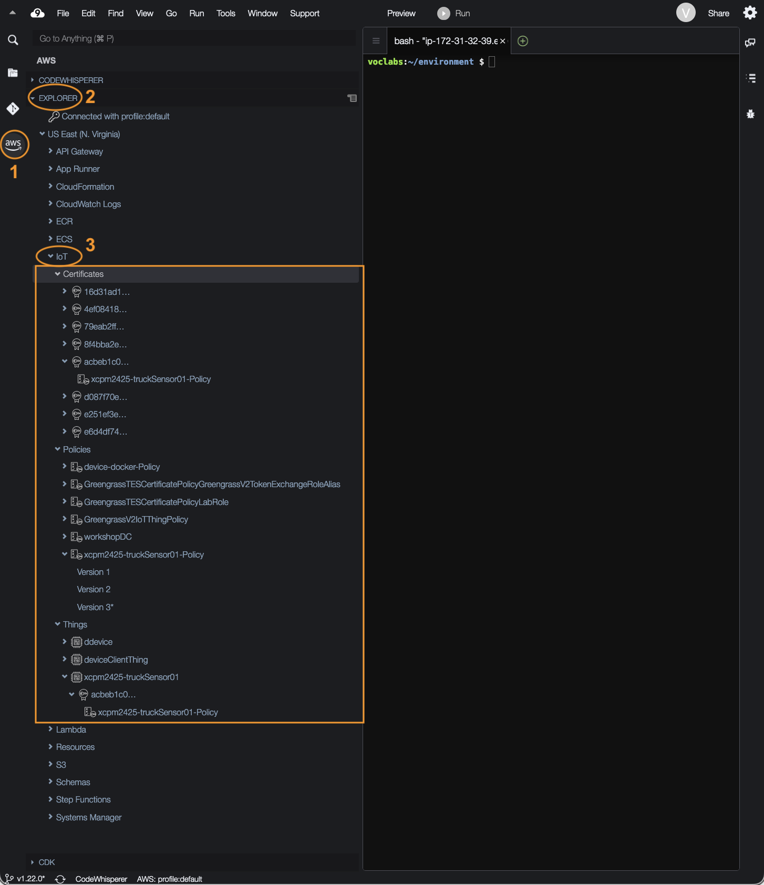
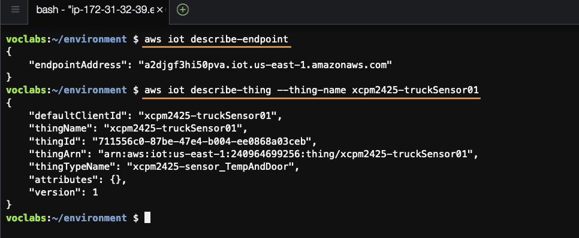

Actividade 2
PROBAR OUTRAS FORMAS DE INTERAXIR CO SERVIZO AWS IOT CORE.
Obxectivo
O obxectivo desta actividade é coñecer dúas maneiras adicionais de interaxir co servizo AWS IoT Core:
-
A AWS Toolkit é unha extensión que permite acceder e traballar con varios servizos AWS, incluído o AWS IoT Core, directamente desde o ambiente Cloud9.
-
A AWS CLI é unha interface de liña de comandos para os servizos AWS que, entre outras posibilidades, pode usarse desde un terminal no ambiente Cloud9 onde xa está instalada por defecto.
AWS Toolkit
Para probar a AWS Toolkit fai o seguinte:
- No ambiente Cloud9, accede ao AWS Explorer e desprega os elementos baixo o servizo IoT.
 Imaxe: AWS Toolkit para IoT aberto no AWS Explorer do ambiente Cloud9.
Aviso
Aínda que no exemplo aparecen máis elementos, no teu caso só aparecerán os que se usaron no curso.
- Desde o menú de contexto de cada elemento (botón dereito do rato) pode accederse ás diferentes accións que poden realizarse con el. Podes curiosear tendo coidado de non modificar nada.
Nota
Consulta aquí todas as operacións que soporta o toolkit para IoT.
AWS CLI
Para probar a AWS CLI fai o seguinte:
- Nun terminal do ambiente Cloud9 executa os comandos que podes ver no seguinte exemplo:
Nomenclatura
Lembra usar o teu prefixo no nome da cousa.
 Imaxe: comandos da AWS CLI executados nun terminal do ambiente Cloud9.
Pregunta
Lembras en que script da actividade 1 se usou o comando describe_endpoint e para que?
Nota
Podes consultar aquí todas as operacións que soporta a CLI para IoT ou tamén executando o comando: aws iot help
Xustificación da actividade
Non é preciso entregar nada para xustificar a realización desta actividade.